# Data Handling and Manipulation
import pandas as pd
import numpy as np
# Data Preprocessing
from sklearn.preprocessing import StandardScaler, OneHotEncoder
from mlxtend.preprocessing import TransactionEncoder
# Model Selection and Evaluation
from sklearn.model_selection import train_test_split, GridSearchCV, RandomizedSearchCV
from sklearn.metrics import silhouette_score, davies_bouldin_score, calinski_harabasz_score
from sklearn.mixture import GaussianMixture
# Machine Learning Models
from mlxtend.frequent_patterns import apriori, association_rules, fpgrowth
from mlxtend.preprocessing import TransactionEncoder
# Stats
from scipy.stats import pearsonr
import statsmodels.api as sm
# Data Visualization
import matplotlib.pyplot as plt
import seaborn as sns
# Set the default style for visualization
sns.set_theme(style = "white", palette = "colorblind")
# Increase font size of all Seaborn plot elements
sns.set(font_scale = 1.25)Association
Lecture 13
John Chen
University of Arizona
INFO 523 - Fall 2025
Warm up
Announcements
- RQ 05 is due Today, 11:59pm
- Final Project Presentations are Mon May 06, 1pm
Setup
Market Basket Analysis
Market Basket Analysis (MBA) is a data mining technique used to discover associations between items within large datasets, typically used in retail to find associations between products purchased together.
Itemsets from records:
{('milk',), ('eggs',), ('apple', 'milk'), ('apple', 'eggs'), ('apple', 'eggs', 'bread'), ('eggs', 'milk'), ('apple',), ('banana',), ('apple', 'banana'), ('banana', 'milk'), ('apple', 'banana', 'milk'), ('eggs', 'bread'), (), ('bread',), ('apple', 'bread')}
Itemsets from items:
[(), ('apple',), ('banana',), ('milk',), ('eggs',), ('bread',), ('apple', 'banana'), ('apple', 'milk'), ('apple', 'eggs'), ('apple', 'bread'), ('banana', 'milk'), ('banana', 'eggs'), ('banana', 'bread'), ('milk', 'eggs'), ('milk', 'bread'), ('eggs', 'bread'), ('apple', 'banana', 'milk'), ('apple', 'banana', 'eggs'), ('apple', 'banana', 'bread'), ('apple', 'milk', 'eggs'), ('apple', 'milk', 'bread'), ('apple', 'eggs', 'bread'), ('banana', 'milk', 'eggs'), ('banana', 'milk', 'bread'), ('banana', 'eggs', 'bread'), ('milk', 'eggs', 'bread'), ('apple', 'banana', 'milk', 'eggs'), ('apple', 'banana', 'milk', 'bread'), ('apple', 'banana', 'eggs', 'bread'), ('apple', 'milk', 'eggs', 'bread'), ('banana', 'milk', 'eggs', 'bread'), ('apple', 'banana', 'milk', 'eggs', 'bread')]Association rules
To build an association rule, we should have at least one antecedent and one consequent:
One antecedent and one consequent: if { 🍪 } then { ☕️ }
Multi antecedent: if { 🍪, 🍰 } then { ☕️}
Multi consequent: if { 🍪 } then { ☕️, 🥛 }
Frequency of events
Frequency of the itemsets:
('apple',), 0.67
('banana',), 0.33
('milk',), 0.67
('apple', 'banana'), 0.33
('apple', 'milk'), 0.33
('banana', 'milk'), 0.33
('apple', 'banana', 'milk'), 0.33
('eggs',), 0.67
('bread',), 0.33
('apple', 'eggs'), 0.33
('apple', 'bread'), 0.33
('eggs', 'bread'), 0.33
('apple', 'eggs', 'bread'), 0.33
('eggs', 'milk'), 0.33Example data
“The Bread Basket” data set that belongs to a bakery located in Edinburgh and includes over 9000 transactions. You can download it from Kaggle.
| Transaction | Item | date_time | period_day | weekday_weekend | |
|---|---|---|---|---|---|
| 0 | 1 | Bread | 30-10-2016 09:58 | morning | weekend |
| 1 | 2 | Scandinavian | 30-10-2016 10:05 | morning | weekend |
| 2 | 2 | Scandinavian | 30-10-2016 10:05 | morning | weekend |
| 3 | 3 | Hot chocolate | 30-10-2016 10:07 | morning | weekend |
| 4 | 3 | Jam | 30-10-2016 10:07 | morning | weekend |
# Groupby by the Transaction Ids and count items
basket = basket.groupby(
by = ['Transaction',
'Item'])['Item'].count().reset_index(name = 'Item_Count')
# Pivot table by the transaction and convert item count to boolean
basket = basket.pivot_table(
index = 'Transaction',
columns = 'Item',
values = 'Item_Count',
aggfunc = 'sum').fillna(0).astype(bool)
basket.head()| Item | Adjustment | Afternoon with the baker | Alfajores | Argentina Night | Art Tray | Bacon | Baguette | Bakewell | Bare Popcorn | Basket | ... | The BART | The Nomad | Tiffin | Toast | Truffles | Tshirt | Valentine's card | Vegan Feast | Vegan mincepie | Victorian Sponge |
|---|---|---|---|---|---|---|---|---|---|---|---|---|---|---|---|---|---|---|---|---|---|
| Transaction | |||||||||||||||||||||
| 1 | False | False | False | False | False | False | False | False | False | False | ... | False | False | False | False | False | False | False | False | False | False |
| 2 | False | False | False | False | False | False | False | False | False | False | ... | False | False | False | False | False | False | False | False | False | False |
| 3 | False | False | False | False | False | False | False | False | False | False | ... | False | False | False | False | False | False | False | False | False | False |
| 4 | False | False | False | False | False | False | False | False | False | False | ... | False | False | False | False | False | False | False | False | False | False |
| 5 | False | False | False | False | False | False | False | False | False | False | ... | False | False | False | False | False | False | False | False | False | False |
5 rows × 94 columns
Association rule metrics
Support: Proportion of transactions including a specific itemset.
Confidence: Probability that buying item A leads to buying item B.
Lift: Ratio of observed to expected frequency of A and B together.
Leverage: Difference in observed versus expected frequency of A and B together.
Conviction: Ratio indicating dependency of B on A, based on their co-occurrence versus independence.
Support
\(\text{Support}(A \rightarrow B) = \frac{Freq(A,B)}{N}\)
Pros:
Easy to understand and calculate.
Helps identify the most common itemsets in the dataset, which can be crucial for decision-making.
Cons:
High support may not always imply a useful or interesting rule, as it does not account for the strength or significance of the association.
Can miss interesting rules with lower support but high confidence or lift.
Confidence
\(\text{Confidence}(A \rightarrow B) = \frac{Support(A \rightarrow B)}{Support(A)}\)
Pros:
Directly measures the reliability of an association rule.
Intuitive interpretation as the conditional probability of occurrence.
Cons:
Can be misleading if the consequent is very common in the dataset, leading to high confidence values that are not necessarily due to a strong association.
Does not account for the base popularity of the consequent item.
Lift
\(\text{Lift}(A \rightarrow B) = \frac{Support(A \rightarrow B)}{Support(A) \times Support(B)}\)
Pros:
Accounts for the base popularity of both antecedent and consequent, providing a more accurate measure of association strength.
A lift value greater than 1 indicates a positive association.
Cons:
Can be harder to interpret compared to support and confidence.
Does not provide directionality of the rule (i.e., which item is driving the association).
Leverage
\(\text{Leverage}(A \rightarrow B) = Support(A \rightarrow B) - (Support(A) \times Support(B))\)
Pros:
Measures the difference in occurrence frequency of itemsets, providing insight into their co-occurrence beyond chance.
Easy to calculate and interpret.
Cons:
Similar to lift, does not indicate the direction of the association.
May not differentiate well between items with very high or very low support.
Conviction
\(\text{Conviction}(A \rightarrow B) = \frac{1 - Support(B)}{1 - Confidence(A \rightarrow B)}\)
Pros:
Captures the degree of dependency between antecedent and consequent, with higher values indicating stronger association.
Provides a measure of rule interest by comparing the observed frequency of the rule to the frequency expected if the items were independent.
Cons:
Less intuitive to understand and interpret for those new to association mining.
Like lift, does not directly indicate the direction of the association.
Frequent itemsets mining
Association rule mining task
Given a set of transactions \(T\), the goal of association rule mining is to find all rules having
support ≥ minsup threshold
confidence ≥ minconf threshold
Brute-force approach:
List all possible association rules
Compute the support and confidence for each rule
Prune rules that fail the minsup and minconf thresholds
\(\rightarrow\) Computationally prohibitive!
Mining association rules
| TID | Items |
|---|---|
| 1 | Bread, Milk |
| 2 | Bread, Diaper, Beer, Eggs |
| 3 | Milk, Diaper, Beer, Coke |
| 4 | Bread, Milk, Diaper, Beer |
| 5 | Bread, Milk, Diaper, Coke |
{Milk,Diaper} \(\rightarrow\) {Beer} (s=0.4, c=0.67)
{Milk,Beer} \(\rightarrow\) {Diaper} (s=0.4, c=1.0)
{Diaper,Beer} \(\rightarrow\) {Milk} (s=0.4, c=0.67)
{Beer} \(\rightarrow\) {Milk,Diaper} (s=0.4, c=0.67)
{Diaper} \(\rightarrow\) {Milk,Beer} (s=0.4, c=0.5)
{Milk} \(\rightarrow\) {Diaper,Beer} (s=0.4, c=0.5)
Observations:
All rules are binary partitions of the itemset {Milk, Diaper, Beer}.
Rules from the same itemset share support but differ in confidence.
Support and confidence requirements can be separated.
Mining association rules
Two-step approach:
- Frequent Itemset Generation
- Generate all itemsets whose support ≥ minsup
- Rule Generation
- Generate high confidence rules from each frequent itemset
- Each rule is a binary partitioning of a frequent itemset
Frequent itemset generation is still computationally expensive…
Frequent itemset generation
Given \(d\) items, there are \(2^d\) itemsets:
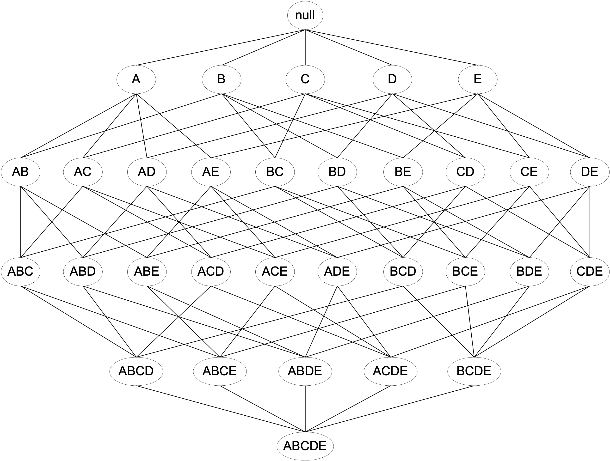
Apriori method
All subsets of a frequent itemset must also be frequent.
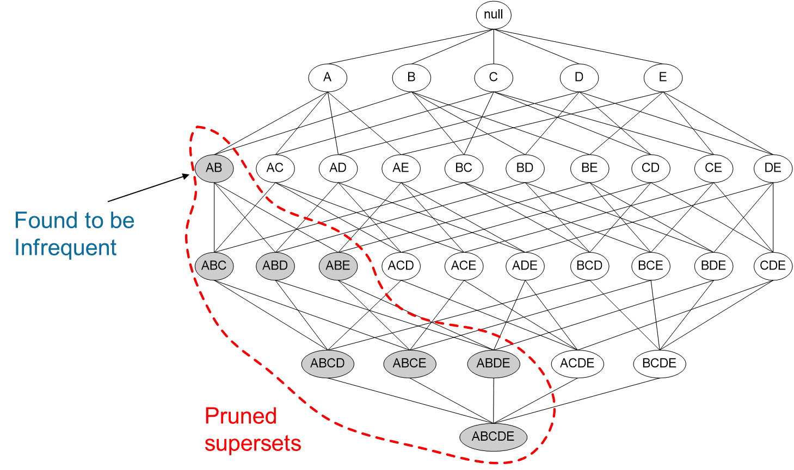
Rule generation
- Calculate support for each itemset to determine which meet the threshold.
- Generate association rules.
\(\text{Support}(A \rightarrow B) = \frac{Freq(A,B)}{N}\)
Evaluate rule strength
- Assess the likelihood that consequent item is purchased with antecedent.
- Filtering based on a confidence threshold.
\(\text{Confidence}(A \rightarrow B) = \frac{Support(A \rightarrow B)}{Support(A)}\)
Contribute to decision making
- Identify strong associations
- Improving predictive accuracy
Pros:
Simplicity: Straightforward and easy to understand.
Generality: Applicable to any transaction dataset without needing domain-specific knowledge.
Widely Used: A foundational technique that informs many other algorithms.
Cons:
Performance Issues: Computationally expensive for large datasets with many items.
Memory Intensive: Requires significant memory for storing candidates at lower support thresholds.
Redundant Computations: Generates many candidates, leading to unnecessary computations.
Apriori method: applied
Code
# Apply Apriori to find frequent itemsets
frequent_itemsets_apriori = apriori(basket, min_support = 0.01, use_colnames = True)
# Generate association rules from Apriori itemsets
rules_apriori = association_rules(frequent_itemsets_apriori, metric = "confidence", min_threshold = 0.5)
print("Association Rules from Apriori:\n", rules_apriori.head())Association Rules from Apriori:
antecedents consequents antecedent support consequent support \
0 (Alfajores) (Coffee) 0.036344 0.478394
1 (Cake) (Coffee) 0.103856 0.478394
2 (Cookies) (Coffee) 0.054411 0.478394
3 (Hot chocolate) (Coffee) 0.058320 0.478394
4 (Juice) (Coffee) 0.038563 0.478394
support confidence lift representativity leverage conviction \
0 0.019651 0.540698 1.130235 1.0 0.002264 1.135648
1 0.054728 0.526958 1.101515 1.0 0.005044 1.102664
2 0.028209 0.518447 1.083723 1.0 0.002179 1.083174
3 0.029583 0.507246 1.060311 1.0 0.001683 1.058553
4 0.020602 0.534247 1.116750 1.0 0.002154 1.119919
zhangs_metric jaccard certainty kulczynski
0 0.119574 0.039693 0.119446 0.290888
1 0.102840 0.103745 0.093105 0.320679
2 0.081700 0.055905 0.076787 0.288707
3 0.060403 0.058333 0.055314 0.284542
4 0.108738 0.041507 0.107078 0.288656 Factors affecting complexity
Choice of Minimum Support Threshold:
Lowering the support threshold \(\rightarrow\) a larger number of frequent itemsets
\(\rightarrow\) increase in candidate itemsets & the maximal length of frequent itemsets
Dimensionality (Number of Items) of the Dataset:
Greater storage space needed to keep track of each item’s support count
If the dataset has a higher number of frequent items, both computational and input/output costs may increase.
Size of Database:
- The runtime of the Apriori algorithm may increase with the number of transactions since it makes multiple passes over the database.
Average Transaction Width:
Wider transactions are typical in denser datasets.
May lead to an increase in the maximal length of frequent itemsets and more traversals of the hash tree, as the number of subsets in a transaction increases with its width.
Frequent itemset generation: ECLAT
ECLAT uses vertical data layout to store a list of transaction ids for each item:
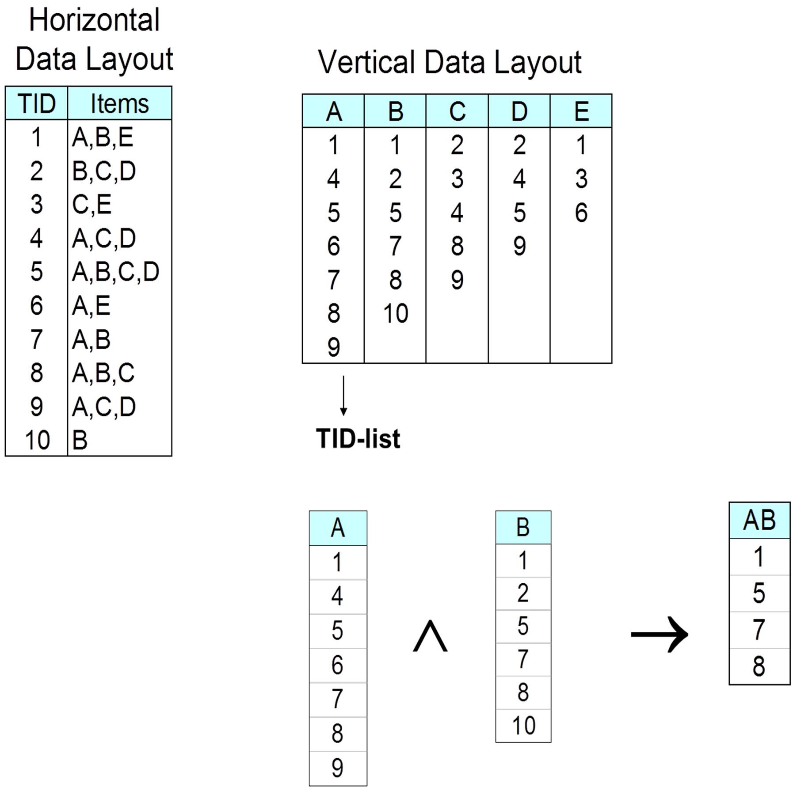
Advantage: very fast support counting
Disadvantage: intermediate tid-lists may become too large for memory
Frequent itemset generation: FP-Growth
Create the root node (null)
Scan the database, get the frequent itemsets of length 1, and sort these 1-itemsets in decreasing support count.
Read a transaction at a time. Sort items in the transaction acoording to the last step.
For each transaction, insert items to the FP-Tree from the root node and increment occurence record at every inserted node.
Create a new child node if reaching the leaf node before the insersion completes.
If a new child node is created, link it from the last node consisting of the same item.
Frequent itemset generation: FP-Growth
Step 1: Calculate The Support Count of Each Item in The Dataset
Frequent itemset generation: FP-Growth
Step 2: Reorganize The Items in The Transaction Dataset
| Transaction ID | Items |
| T1 | I3, I1, I4 |
| T2 | I3, I5, I2, I6 |
| T3 | I3, I5, I1, I2 |
| T4 | I5, I2 |
| T5 | I3, I5, I1 |
Frequent itemset generation: FP-Growth
Step 3: Create FP Tree Using the Transaction Dataset
To construct an FP-Tree for the FP-growth algorithm, perform these steps:
Initialize a root node labeled as Null.
For each transaction, sorted by item support in descending order:
Start from the root node.
For each item in the transaction:
If a child node with the item exists, increment its count by 1 and proceed to this child.
Otherwise, create a new child node for the item, set its count to 1, and proceed to the new node.
Repeat for all transactions in the dataset.
Frequent itemset generation: FP-Growth
Add Items from Transaction T1 to the FP Tree
Initialize Null root node for the FP-tree.
Select first transaction T1: sorted items [I3, I1, I4].
At root, no child for I3 exists; create child node for I3 with count 1.
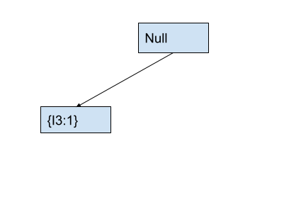
Frequent itemset generation: FP-Growth
Add Items from Transaction T1 to the FP Tree
Move to node I3 and proceed to next item I1 in transaction.
No child node for I1 under I3; create child node for I1 with count 1.
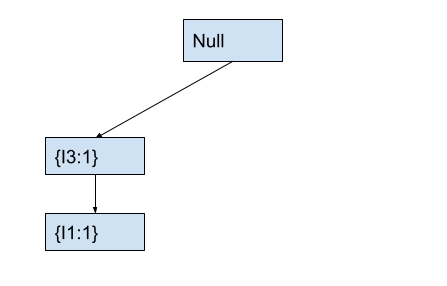
Frequent itemset generation: FP-Growth
Add Items from Transaction T1 to the FP Tree
Move to node I1 and next item I4 in transaction.
No child node for I4 under I1; create child node for I4 with count 1.
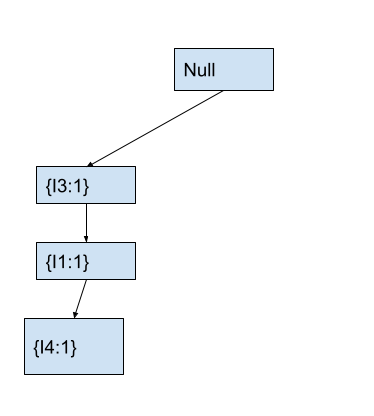
Frequent itemset generation: FP-Growth
Add Items from Transaction T2 to the FP Tree
Complete traversal of T1; move to T2 with items [I3, I5, I2, I6].
At root, find child node with I3; increment its count by 1.
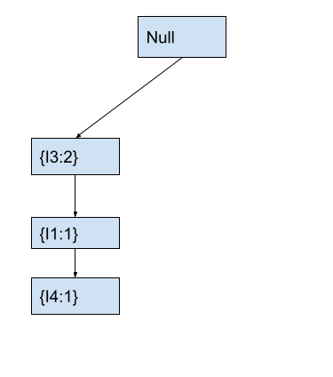
Frequent itemset generation: FP-Growth
Add Items from Transaction T2 to the FP Tree
Move to modified I3 node and next item I5 in T2.
No child node for I5 under I3; create child node for I5 with count 1.
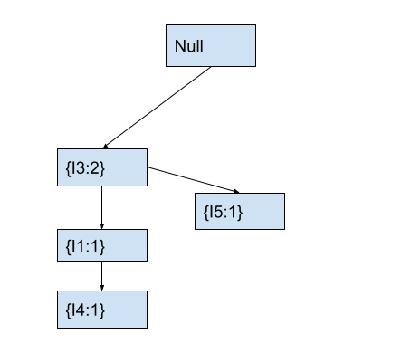
Frequent itemset generation: FP-Growth
Add Items from Transaction T2 to the FP Tree
Move to newly created I5 node and next item I2 in transaction.
No child node for I2 under I5; create child node for I2 with count 1.
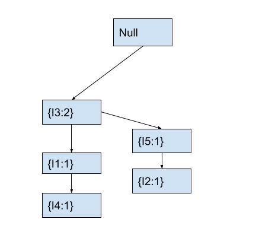
Frequent itemset generation: FP-Growth
Add Items from Transaction T2 to the FP Tree
Move to newly created I2 node and next item I6 in transaction.
No child node for I6 under I2; create child node for I6 with count 1.
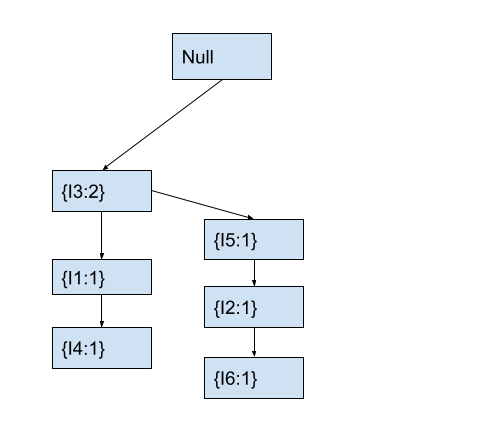
Frequent itemset generation: FP-Growth
Add Items from Transaction T3 to the FP Tree
Finished traversing T2; start T3 with items [I3, I5, I1, I2].
At root, find I3; increment its count by 1 since it exists.
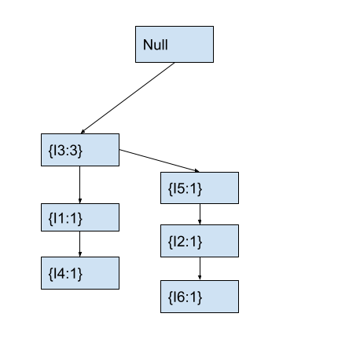
Frequent itemset generation: FP-Growth
Add Items from Transaction T3 to the FP Tree
Move to modified I3 node and next item I5 in transaction.
Find existing child node for I5 under I3; increment I5’s count by 1.
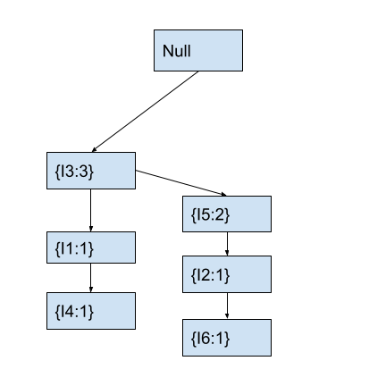
Frequent itemset generation: FP-Growth
Add Items from Transaction T3 to the FP Tree
Move to modified I5 node and next item I1 in transaction.
No child node for I1 under I5; create child node for I1 with count 1.
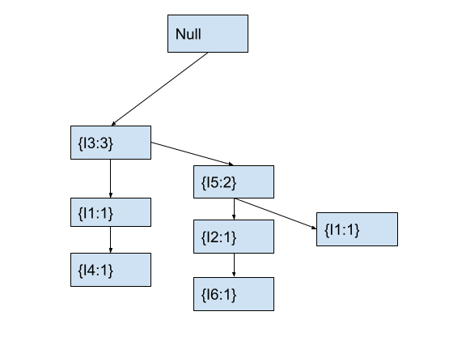
Frequent itemset generation: FP-Growth
Add Items from Transaction T3 to the FP Tree
Move to newly created I1 node and next item I2 in transaction.
No child node for I2 under I1; create child node for I2 with count 1.
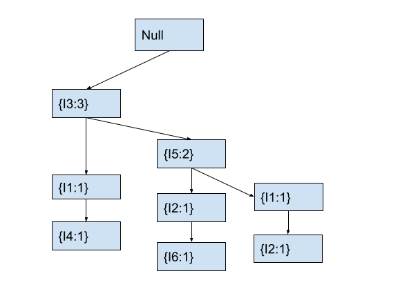
Frequent itemset generation: FP-Growth
Add Items From Transaction T4 to the FP Tree
Starting with I5 at root, check for child node with I5.
No child node for I5; create new child node for I5 with count 1 at root.
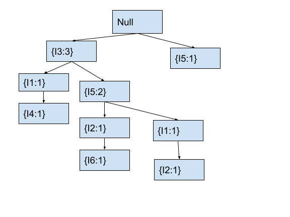
Frequent itemset generation: FP-Growth
Add Items From Transaction T4 to the FP Tree
Starting with I5 at root, check for child node with I5.
No child node for I5; create new child node for I5 with count 1 at root.
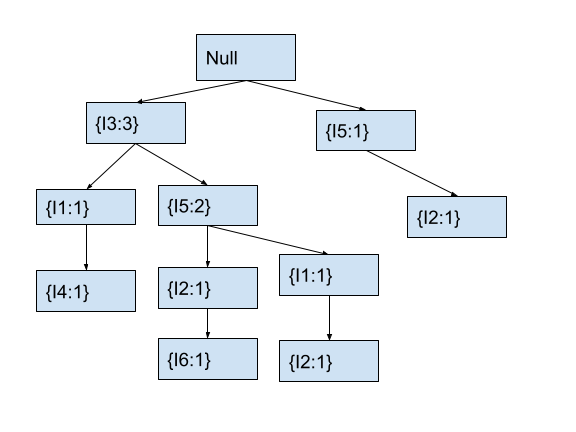
Frequent itemset generation: FP-Growth
Step 4: Create a Pattern Base For All The Items Using The FP-Tree
To construct pattern bases using the FP-growth algorithm, we analyze the FP-tree to track paths leading to each item, summarizing the findings:
Pattern Base for I1:
{I3}:1,{I3, I5}:2. This reflects paths from I3 to I1 (count 1) and I3 through I5 to I1 (count 2).Pattern Base for I2:
{I3, I5}:1,{I3, I5, I1}:1,{I5}:1. Represents paths I3->I5->I2, I3->I5->I1->I2 (each with count 1), and directly I5->I2 (count 1).Pattern Base for I3: None, as I3 is directly connected to the root.
Pattern Base for I5:
{I3}:3, indicating the path I3->I5 with count 3.Pattern Base for I4 and I6: Not applicable, as their support does not meet the threshold for inclusion in this analysis.
Frequent itemset generation: FP-Growth
Step 4: Create a Pattern Base For All The Items Using The FP-Tree
The pattern base for each item in the dataset is tabulated below.
| Item | Pattern Base |
I1 |
{I3}:1,{I3, I5}:2 |
I2 |
{I3, I5}:1,{I3, I5, I1}:1,{I5}:1 |
I3 |
{} |
I5 |
{I3}:3 |
Frequent itemset generation: FP-Growth
Step 5: Create a Conditional FP Tree For Each Frequent Item
Item I1: In its pattern base, I3 appears with total count 3 ({I3} with count 1 and {I3,I5} with count 2); I5 appears in {I3, I5} with count 2. Conditional FP-tree: {I3:3, I5:2}.
Item I2: Pattern base shows I3 (total count 2) and I5 (total count 3); I1 (count 1) is dropped for being below minimum support. Conditional FP-tree: {I3:2, I5:3}.
Item I5: Pattern base shows I3 with count 3. Conditional FP-tree: {I3:3}.
Frequent itemset generation: FP-Growth
Step 5: Create a Conditional FP Tree For Each Frequent Item
The conditional fp-tree for each item is tabulated below.
| Item | Pattern Base | Conditional FP Tree |
I1 |
{I3}:1,{I3, I5}:2 |
{I3:3, I5:2} |
I2 |
{I3, I5}:1,{I3, I5, I1}:1,{I5}:1 |
{I3:2, I5:3} |
I3 |
{} |
|
I5 |
{I3}:3 |
{I3:3} |
Frequent itemset generation: FP-Growth
Step 6: Generate Frequent Itemsets From Conditional FP-Trees
After constructing the conditional FP-tree, we generate frequent itemsets for each item by combining items in the conditional FP-tree with their counts:
For I1: Frequent itemsets are
{I1, I3}:3,{I1, I5}:2, and{I1, I3, I5}:2. The support counts are determined by the maximum support of items in the conditional FP-tree, with{I1, I5}and{I1, I3, I5}limited to 2 due toI5’s maximum support count.For I2: Frequent itemsets include
{I2, I3}:2,{I2, I5}:3, and{I2, I3, I5}:2. Here, the support count of{I2, I3}and{I2, I3, I5}is restricted to 2 due toI3’s support count, while{I2, I5}reaches 3, reflectingI5’s maximum support in the conditional FP-tree.For I5: The only frequent itemset is
{I3, I5}with a count of 3, as derived from the conditional FP-tree’s support counts.
Frequent itemset generation: FP-Growth
Step 6: Generate Frequent Itemsets From Conditional FP-Trees
All the frequent itemsets derived from the conditional fp-trees have been tabulated below.
| Item | Pattern Base | Conditional FP Tree | Frequent itemsets |
I1 |
{I3}:1,{I3, I5}:2 |
{I3:3, I5:2} |
{I1, I3}:3,{I1, I5}:2,{I1, I3, I5}:2 |
I2 |
{I3, I5}:1,{I3, I5, I1}:1,{I5}:1 |
{I3:2, I5:3} |
{I2, I3}:2, {I2, I5}:3,{I2, I3, I5}:2 |
I5 |
{I3}:3 |
{I3:3} |
{I3, I5}:3 |
Frequent itemset generation: FP-Growth
Step 7: Generate Association Rules, e.g.:
| Itemset | Association Rules |
{I1} |
x |
{I2} |
x |
{I3} |
x |
{I5} |
x |
{I1,I3} |
{I1}->{I3}, {I3}->{I1} |
{I1,I5} |
{I1}->{I5}, {I5}->{I1} |
{I2,I3} |
{I2}->{I3}, {I3}->{I2} |
{I2,I5} |
{I2}->{I5}, {I5}->{I2} |
{I3,I5} |
{I3}->{I5}, {I5}->{I3} |
{I2, I3, I5} |
{I2}->{I3, I5}, {I3}->{I2, I5}, {I5}->{I2, I3}, {I2, I3}->{I5}, {I2, I5}->{I3}, {I3, I5}->{I2} |
{I1, I3, I5} |
{I1}->{I3, I5}, {I3}->{I1, I5}, {I5}->{I1, I3}, {I1, I3}->{I5}, {I1, I5}->{I3}, {I3, I5}->{I1} |
FP-Growth: applied
Code
# Apply FP-Growth to find frequent itemsets
frequent_itemsets_fpgrowth = fpgrowth(basket, min_support = 0.01, use_colnames = True)
# The frequent itemsets found by FP-Growth will be the same as those found by Apriori
# but potentially in a different order and possibly faster depending on the dataset
print("\nFrequent Itemsets from FP-Growth:\n", frequent_itemsets_fpgrowth.head())
Frequent Itemsets from FP-Growth:
support itemsets
0 0.327205 (Bread)
1 0.029054 (Scandinavian)
2 0.058320 (Hot chocolate)
3 0.054411 (Cookies)
4 0.015003 (Jam)Maximal frequent itemsets
An itemset is maximal frequent if none of its immediate supersets is frequent:
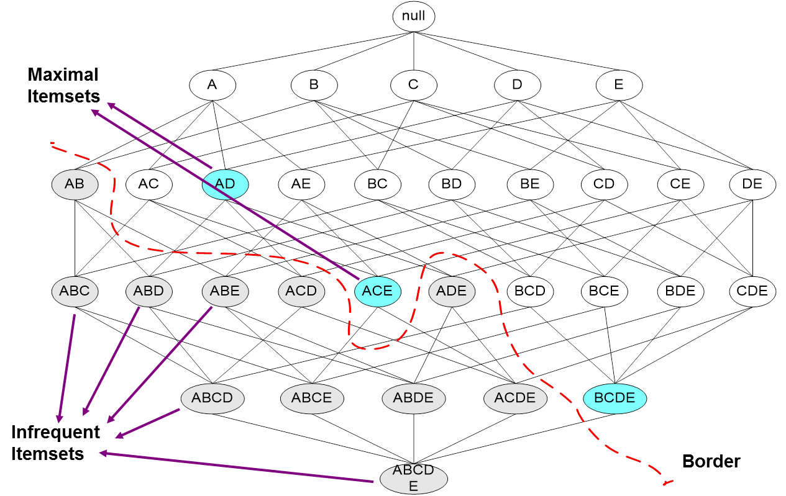
Closed itemsets
None of an itemset’s its immediate supersets has the same support as the itemset
- Can only have smaller support \(\rightarrow\) see APRIORI principle above
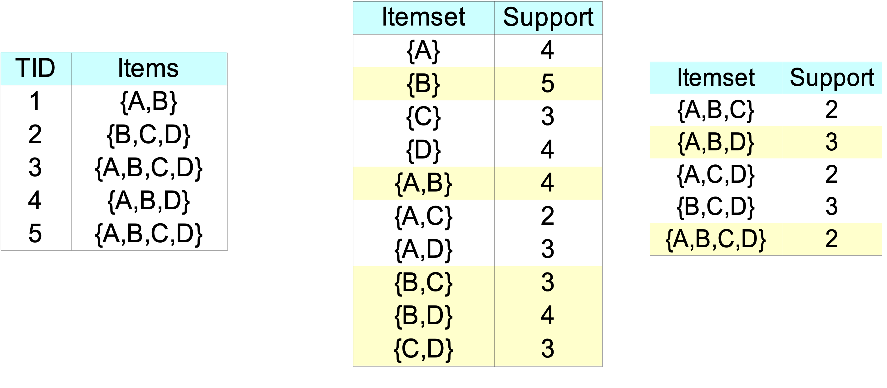
Closed vs. maximal itemsets
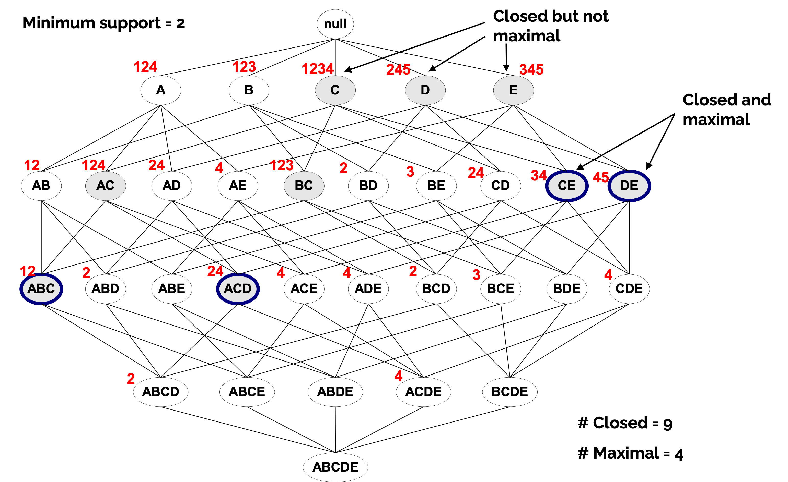
Closed & maximal itemsets: applied
Code
import time
# Task 1: Compute Frequent Item Set using mlxtend.frequent_patterns
start_time = time.time()
frequent_itemsets = fpgrowth(basket, min_support = 0.001, use_colnames = True)
print('Time to find frequent itemset:', time.time() - start_time, 'seconds')
# Task 2 & 3: Find closed/max frequent itemset using the frequent itemset found in Task 1
# Initialize lists to store closed and max itemsets
closed_itemsets = []
max_itemsets = []
# Get all unique support counts
unique_supports = frequent_itemsets['support'].unique()Time to find frequent itemset: 4.540992021560669 secondsCode
# Find closed itemsets
for support in unique_supports:
itemsets_at_support = frequent_itemsets[frequent_itemsets['support'] == support]['itemsets']
for itemset in itemsets_at_support:
is_closed = not any((itemset < other_itemset) and (itemset != other_itemset) for other_itemset in itemsets_at_support)
if is_closed:
closed_itemsets.append(itemset)
print(f'Found {len(closed_itemsets)} closed itemsets')Found 471 closed itemsetsCode
# Find max itemsets
for support in sorted(unique_supports, reverse=True):
itemsets_at_or_above_support = frequent_itemsets[frequent_itemsets['support'] >= support]['itemsets']
for itemset in itemsets_at_or_above_support:
is_max = not any(itemset < other_itemset for other_itemset in itemsets_at_or_above_support if itemset != other_itemset)
if is_max and itemset not in max_itemsets:
max_itemsets.append(itemset)
print(f'Found {len(max_itemsets)} max itemsets')Found 471 max itemsetsCorrelations from association
# Convert boolean values to integers for correlation analysis
df_numeric = basket.astype(int)
# Example calculation (assuming you want to compare 'Cake' and 'Coffee')
corr_coefficient, p_value = pearsonr(df_numeric['Cake'], df_numeric['Coffee'])
print(f"Pearson Correlation Coefficient between Cake and Coffee: {corr_coefficient:.3f}")
print(f"P-Value: {p_value:.3f}")Pearson Correlation Coefficient between Cake and Coffee: 0.033
P-Value: 0.001Regression analysis
Code
Optimization terminated successfully.
Current function value: 0.691666
Iterations 3
Logit Regression Results
==============================================================================
Dep. Variable: Coffee No. Observations: 9465
Model: Logit Df Residuals: 9463
Method: MLE Df Model: 1
Date: Wed, 20 Aug 2025 Pseudo R-squ.: 0.0007904
Time: 11:35:27 Log-Likelihood: -6546.6
converged: True LL-Null: -6551.8
Covariance Type: nonrobust LLR p-value: 0.001290
==============================================================================
coef std err z P>|z| [0.025 0.975]
------------------------------------------------------------------------------
const -0.1090 0.022 -5.014 0.000 -0.152 -0.066
Cake 0.2170 0.067 3.215 0.001 0.085 0.349
==============================================================================Conclusions
Association Rule Mining’s Versatility: It uncovers relationships in datasets, useful across retail, bioinformatics, and web mining.
Strength ≠ Usefulness: High support and confidence don’t guarantee an association rule’s relevance; evaluation of novelty and usefulness is critical.
Advanced Measures for Depth: Beyond support and confidence, lift, leverage, and conviction offer deeper insights into rule significance.
Reducing Redundancy: Mining closed and maximal itemsets streamlines pattern discovery, highlighting the most pertinent itemsets.
Beyond Co-occurrence: Correlation analysis reveals the influence between items, adding a layer of understanding to association rules.
Crucial Data Preparation: Effective data format and preparation are key to successful mining and statistical analysis.
Significance vs. Usefulness: Distinguishing statistical from practical significance is essential; not all statistically significant rules are practically useful.
Interdisciplinary Insights: Combining data mining, statistics, and domain knowledge enhances the interpretation and application of findings.
Conclusions cont…
The semester is over!!! 😭
…but actually 🥳
✌🏻
In-class Exercise
Go to ex-13 and perform the tasks